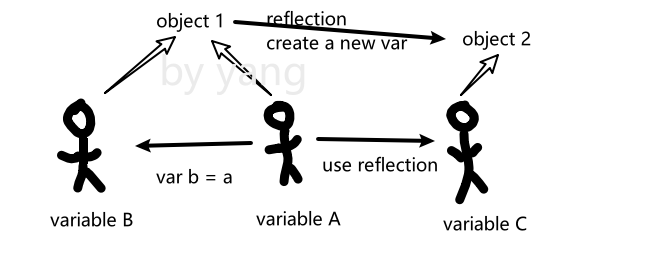

C#之反射：
举个例子，你有一个List a，如果你直接使用var b = a，那么你设置b[0] = 3的时候a[0]也会被设置成3，而深拷贝则会让它完全分开，效果类似b = new List<int>()。
首先是最精简的代码：
输出：
那我们证明一下： 可以看到经过反射的object是完全独立的，而直接赋值的object则会指向同一个物体。 那假如我们一个方法有多个重载怎么办：
如果你想调用Run(string name)这个重载的话，可以改成run.Invoke(o, 你的参数);
获取所有的构造函数：
输出：